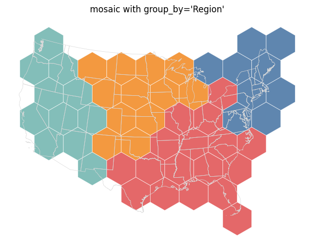
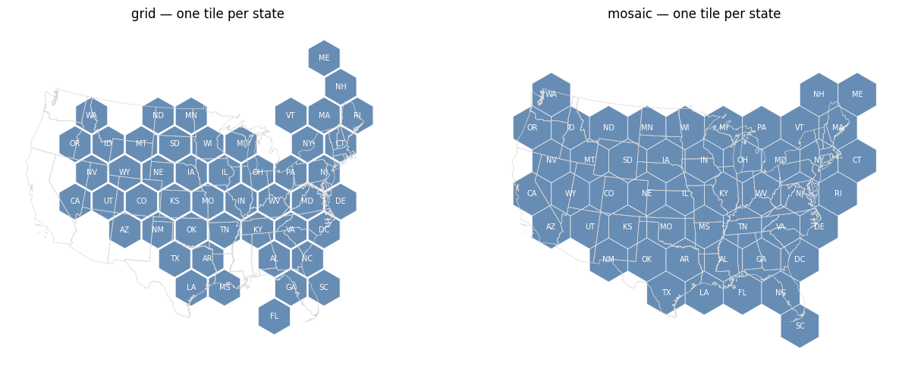
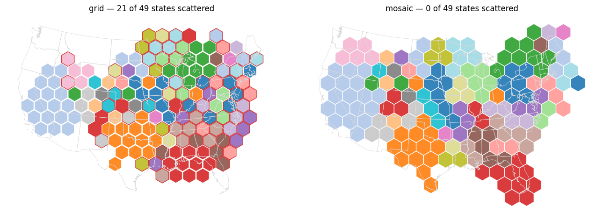

New how-to that runs both tile-lattice layouts on the same inputs and scores them with one external metric set; this page records the measurements the guidance rests on, including which numbers from the earlier grid-vs-mosaic study still hold on current main.
Docs only.
docs/how-to/choose-grid-or-mosaic-layout.ipynb, registered in mkdocs.ymland docs/how-to/index.md.
docs/how-to/tile-count-maps.ipynb.
docs/explanations/symbol-cartogram-grid-layout.md anddocs/explanations/symbol-cartogram-mosaic-layout.md, behavior only.
docs/explanations/ explains algorithms and implementation only — no result tables, no decision history. The guidance is evidence-backed, so the evidence had to go somewhere the rule allows. docs/how-to/voronoi_cartogram/choose-backend.ipynb is the existing precedent: a decision guide, with live timings, a side-by-side figure and a recommendation table. The new page follows it exactly.
The tension is resolved by splitting the two registers rather than by weakening either:
so the numbers are current and reproducible rather than quoted from a study;
is a separate item and no term in the cost matrix ties the items of one region together" — with no number, no table, and no reference to this or any PR.
All re-run on main @ 3a637b1 (not taken from the earlier study), with the same metric definitions: adjacency = fraction of input neighbor pairs still lattice-adjacent; displacement = median centroid-to-block-center distance in tile widths; reversed = fraction of neighbor pairs whose direction turned more than 90 degrees; scattered = regions whose tiles are not one edge-connected block; silhouette = IoU of the occupied tile footprint against the original map outline after equal-area scaling and centroid alignment.
| layout | adjacency | displacement | reversed | scattered | silhouette | seconds |
|---|---|---|---|---|---|---|
| grid | **0.789** | **1.22** | **0.000** | 0 | 0.609 | 1.7 |
| mosaic | 0.725 | 1.53 | 0.064 | 0 | **0.713** | 1.4 |
Direction median: grid 23.6 degrees, mosaic 28.3.
tile_count, same 49 states| layout | adjacency | displacement | reversed | scattered | silhouette | seconds |
|---|---|---|---|---|---|---|
| grid | 0.780 | 2.43 | 0.083 | **21** | 0.667 | 4.6 |
| mosaic | **0.798** | **2.10** | **0.009** | **0** | **0.687** | **1.2** |
group_byGridBasedLayout raises ValueError ("does not support group_by: it would ignore the grouping ... Layouts that honor group_by: centroid, flow_density, mosaic, packing"). MosaicLayout.supports_group_by = True and constrains a group's tiles to one block.
432 congressional districts, one tile per district, no group_by (grid cannot take it): grid **113.3 s**, mosaic 4.4 s — a factor of ~26.
The brief's numbers come from visual_checks/grid-vs-mosaic-similarity/, measured at origin/main @ 0e917a8. Three PRs merged since then move some of them. Checked one by one:
| claim in the brief | on current main | verdict |
|---|---|---|
| 1:1 displacement 1.22 (grid) vs 1.56 (mosaic) | 1.22 vs **1.53** | holds; mosaic marginally better |
| 1:1 adjacency 0.789 vs 0.697 | 0.789 vs **0.725** | holds; the gap narrowed |
| 1:1 direction 23.6 vs 26.1 degrees | 23.6 vs **28.3** | holds; mosaic slightly worse now |
| grid reverses none of the 109 input adjacencies, mosaic 9.2 % | grid 0.000, mosaic **6.4 %** | holds |
| at 154 tiles grid leaves 21 of 49 states scattered, mosaic 0 | 21 and 0, exactly | holds |
| on districts grid splits 8 state groups, mosaic 0 | not re-measured — grid now raises on group_by, so the comparison no longer exists | superseded |
| grid ~27x slower on districts (108 s vs 3.9 s) | 113.3 s vs 4.4 s, ~26x | holds |
| silhouette: US states 1:1, 0.71 mosaic vs 0.61 grid | 0.713 vs 0.609 | holds |
| silhouette: districts 0.70 vs 0.62 | not re-measured (113 s per grid run) | not checked |
| bounding-box metrics point the other way, so write from silhouette | followed — the guide reports silhouette IoU and no bbox metric | applied |
group_by is the sharpest divider; grid raises | confirmed in layouts/base.py::check_group_by_support and the missing supports_group_by on GridBasedLayout | holds |
**The one place the study is now out of date in substance**: the brief says mosaic loses the per-region axes and wins only contiguity, grouping and silhouette. At 154 tiles that is no longer true — mosaic now leads adjacency (0.798 vs 0.780), displacement (2.10 vs 2.43) and reversals (0.009 vs 0.083) as well. The cause is visible in the study itself: section 6 found interior_bonus=2.0 better than 0.5 on every multi-tile and grouped panel, and 2.0 is the current default. The study's multi-tile mosaic row (adjacency 0.706) was measured at 0.5. The guide is written to the current behavior, so it says mosaic overtakes grid on the per-region columns once regions span several tiles, rather than repeating the study's ordering.
Mosaic's disjoint component pools also show up at 1:1: adjacency 0.697 in the study against 0.725 here, on the same input and the same default settings.
make check: clean (pre-commit, mypy on 80 files, deptry).make test: 710 passed.uv run mkdocs build -s, run alone with docs/generated/ and site/ cleared:built in 417.79 s, 26 of 26 gallery files executed. The first attempt died in mkdocs-gallery's write_computation_times with the known OverflowError; a clean rerun succeeded. The built page was checked for its three figures and its tables.

mosaic with group_by="Region": four contiguous regional blocks. Grid raises on this input rather than placing symbols as if the grouping were absent, so there is no grid panel to show.

One tile per state, grid vs mosaic, same axis limits, state abbreviations labeled. Grid's arrangement reads more accurately state by state; mosaic's footprint reads more accurately as the United States. This is the figure the "per-region fidelity vs silhouette" sentence in the guide is written from.

154 tiles via tile_count, one color per state, tiles of a scattered state outlined in red. Grid leaves 21 of 49 states in more than one block; mosaic leaves none.